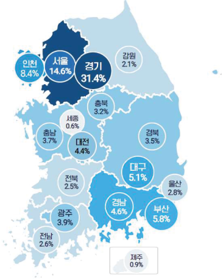
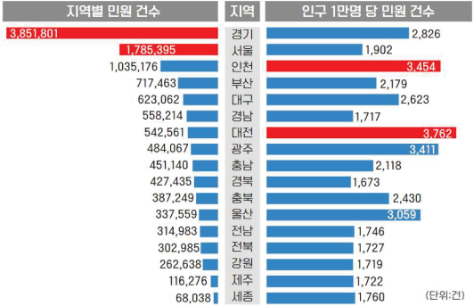

● 지역별 현황

경기 31.4% 건 (3,851,801), 서울 14.6% 인천 8.4% 건 (1,785,395 ), 건
(1,035,176 )로 수도권이 전체의 54.4% 부산 5.8% (717,463 ) 대구 건 경남
4.6% , (558,214 ) 대전 건 광주 3.9% , 5.1% (623,062 ), 건 4.4% (542,561 ),
건 (484,067 ) 순
인구수 (’23.12 월 기준 )를 기준(민원발생량/ 지역인구수)으로 보면 대전,
인천, 광주, 울산, 경기 등의 지역에서 상대적으로 많이 발생
